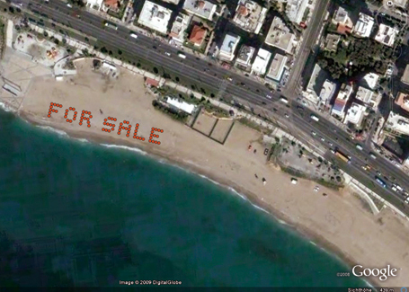
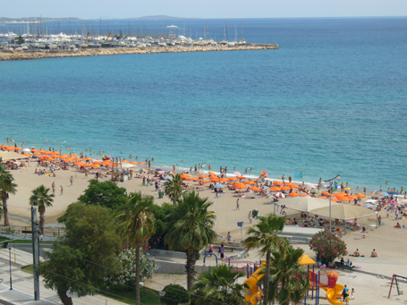
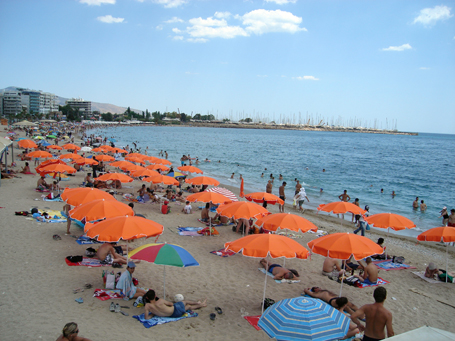
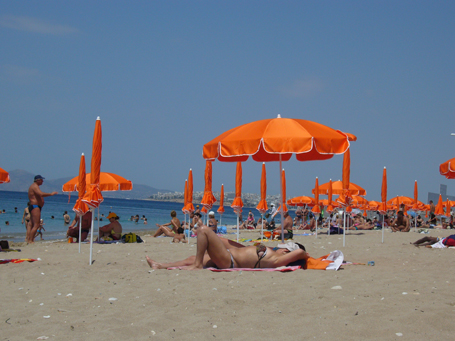

|
 "Barking Dogs United: Property Offer" public art project part of "HEAVEN: Live", curated by D. Papaioannou & Z. Xagoraris, 2nd Athens Biennale 2009 HEAVEN, Athens, Greece. Beach umbrellas are available (within a given structure), for visitors and bathers at Edem Beach, a site, along the Palaio Faliro coastline, which was recently gained back by the public for free use. BDU utilize beach umbrellas in order to create a landscape-graffiti, tagging the place with a short text, as it would have been pinned on a Google Earth map. BDU marks the beach as a further asset to the market on the global map, a site-specific intervention, which could be seen best from the air.    Close Window All content copyright 2009 Naomi Tereza Salmon - all rights reserved |